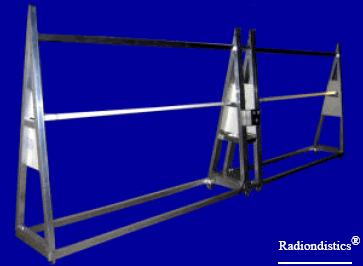

|
Planning a trip to Sicily? Then,
make sure you won't be feeding the Mafia!

|
|
|
If you have a scientific interest in the physics of the
radio, you should browse this site as an e-book!
|
|
|
|
Errante's all-in-one hertzian
radiation physics apparatus.
This equipment allows to carry out several measurements and
experiments into the physics of radio-electric signals and
transducers.

|
Foreword
Although more than a century has gone by, since Heinrich Hertz made his first
artificial radio transmission, the comprehension of radio-electric phenomena (usually
referred to as electromagnetism) has been limited to mere theory. This because, the
analysis of radio-electric phenomena had, untill now, relied almost entirely on
mathematical conjectures. Mathematics is of great help to physics but cannot take the
place of the instrumental observations of the natural phenomena. Instrumental
observation is essentially dependant on the progress of technology but, above all, it
needs the inventive of scientists without prejudices.
The apparatus presented here below, allows the step-by-step replication of the main
experiments masterminded and made by the author in order to
investigate the physics of the radio-electric signals and transducers. These
experiments have directly led him into the discovery of the actual mechanism
(radio-electric transduction) that originates the hertzian radiation (better
known as radio waves). Also read: Hertzian
radiation: what it is and how it happens by Francesco Errante
This equipment enables researchers and teachers alike to carry out several
experiments and measurements and makes easy to comprehend how hertzian radiation
takes place onto an electric conductor and its propagation in the space. This is done
by means of employing gas filled detector tubes and
electric measurements instruments concurrently. This equipment proves it-self to be
an invaluable teaching tool, as seeing is believing. It, infact, affords the students
a naked eye observation of the energy distribution along both the two branches of the dipole antenna and in its immediate
surroundings. Moreover, the electronics that comes with it, permits to vary and to
measure the power of the radio-electric signal being injected into the aerial as well
as measuring all the relevant standing wave ratios during the signal transduction
process, in order to univocally establish causes and effects. (Proportionality
between the antenna feeding power and the strength of the generated field;
attenuation due to the medium etc...)
 |

|

|
 It is now available our apparatus for the physics of the RF balanced transmission lines.
Here ! It is now available our apparatus for the physics of the RF balanced transmission lines.
Here !

For pricing and delivery time, please,
contact us.
RADIONDISTICS' products carry an unconditional lifetime
guarantee.
|
|
|
|
All the concepts, methods, designs and devices presented on this
web site
are the original novelty works of FRANCESCO ERRANTE.
Patents & Copyright © 1985- of FRANCESCO ERRANTE.
Material is governed by the Copyright, Designs and Patent Act.
No reproduction, in whole or in part, without written permission.
Copies of these documents made by electronic or mechanical means, including information storage and retrieval systems, may only be employed for personal use.
All rights reserved.

|
All rights reserved. Copyright © 1985- Francesco Errante
www.Radiondistics.com - Tel.(+39) 339.180.1313
|
|